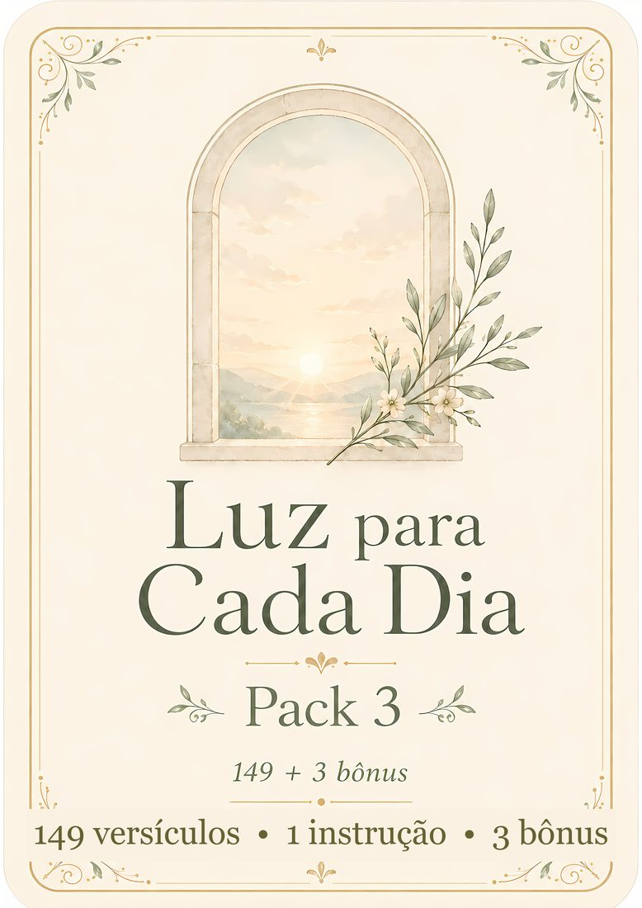
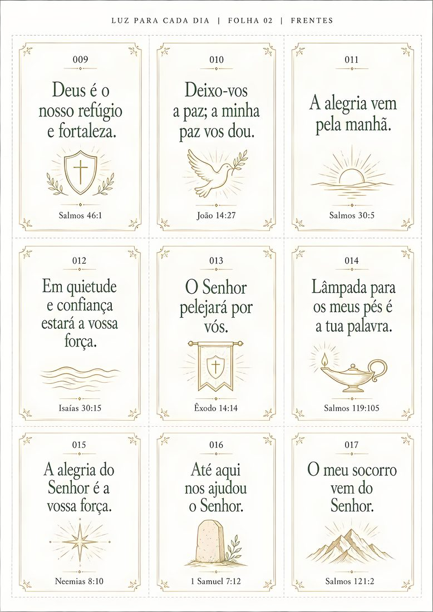
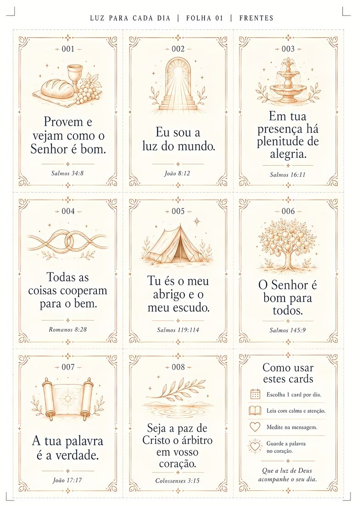
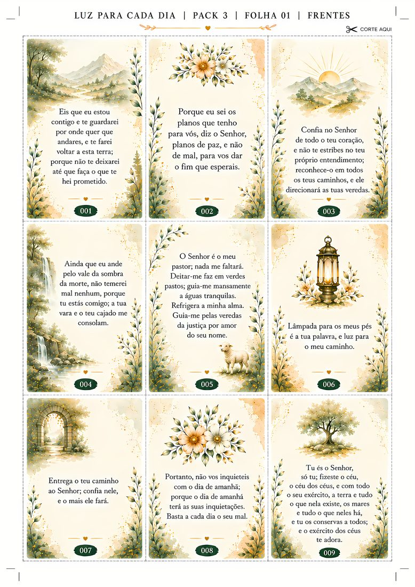

1
Imprima
Use a impressora de casa ou envie o PDF para a papelaria. Papel mais firme deixa os cards ainda mais bonitos.
Coleção Luz para Cada Dia
Mensagens rápidas, versículos completos e arte ilustrada para o seu devocional, para presentear e para compartilhar.
CONHECER A COLEÇÃO
Por que isso importa
Você abre a Bíblia no celular, chega uma mensagem, depois outra, e aquele momento que era para ser seu com Deus se perde no meio da tela.
Não é falta de vontade. É falta de deixar algo simples, bonito e acessível onde seus olhos encontram.
Luz para Cada Dia transforma uma coleção digital em cards que ficam na mesa, dentro da Bíblia, na bolsa ou na mão de alguém que precisa de uma Palavra.
Como funciona
Os arquivos chegam prontos. Você escolhe as folhas, imprime, recorta e começa.
Use a impressora de casa ou envie o PDF para a papelaria. Papel mais firme deixa os cards ainda mais bonitos.
Siga as marcas das folhas com tesoura ou estilete. O Pack 3 já traz orientação de corte.
Deixe um card perto de você, use no devocional ou faça lembranças para alguém especial.
Sem gráfica. Sem prazo. Sem precisar criar nada do zero.
Esta coleção é para você se...
Um card diminui a barreira de começar. Leia, medite, ore e leve aquela Palavra no dia.
Imprima para uma amiga, para sua mãe ou para alguém vivendo um momento importante.
Tenha uma coleção pronta para encontros e grupos de oração, respeitando a licença de uso pessoal.
Use os cards na mesa, no café da manhã ou em momentos curtos de fé em casa.
Exemplos da coleção
Não são três listas de versículos diferentes — são três formas de viver a mesma Palavra: a frase que se memoriza, a linguagem que se ora e o texto que se medita.



Frase curta em linguagem de hoje (NVI). Cabe na memória e no bolso — para os dias em que você precisa de uma Palavra direta.
A mesma Palavra na linguagem clássica (ARC). Onde um card diz “a minha graça te basta”, o outro responde “a tua graça me basta”.
O versículo inteiro, com ilustração em aquarela em cada card. Feito para ficar exposto — ou para presentear.
Incluso sem custo adicional
Bônus 1
Um ponto de partida simples para entregar o dia a Deus antes da correria.
Incluso na coleção
Bônus 2
Uma leitura breve para lembrar das promessas e renovar a confiança.
Incluso na coleção
Bônus 3
Um convite para reconhecer a bondade de Deus também nas pequenas coisas.
Incluso na coleção
Tudo que você recebe hoje
🔒 Compra segura • ⚡ Acesso em minutos • 🛡️ 7 dias de garantia
QUERO A COLEÇÃO COMPLETARisco zero
Baixe, conheça os arquivos e faça a sua primeira impressão. Se a coleção não for o que você esperava, solicite o reembolso dentro de 7 dias.
Dúvidas frequentes
Não. Você recebe arquivos digitais para baixar, imprimir e recortar onde preferir.
Não. Você pode enviar os PDFs para uma gráfica ou papelaria.
Alguns sim, e isso é proposital. Os dois trazem passagens em comum, porém em traduções e redações diferentes — um em linguagem atual, outro na forma clássica. São 274 referências bíblicas distintas em 354 cards. Quando a passagem se repete, o que muda é o modo de dizer: “Deem graças em todas as circunstâncias” e “Em tudo dai graças” são a mesma verdade em dois tons.
Os arquivos estão em A4 a 300 DPI, o padrão de gráfica. O Pack 3 é ilustrado em cores — para ele, papel mais firme e impressão colorida fazem diferença.
Você pode imprimir para uso pessoal e presentear pessoas próximas. Distribuição ampla, reprodução comercial ou revenda exigem autorização.
Comece no próximo momento que você tiver
Imprima a coleção, recorte e deixe os cards onde seus olhos possam encontrá-los.
QUERO LUZ PARA CADA DIA